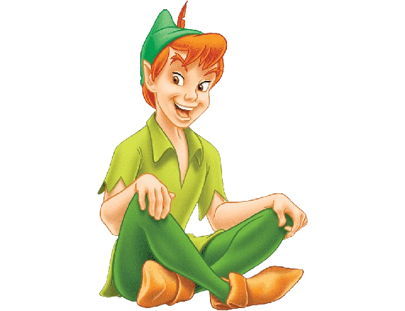
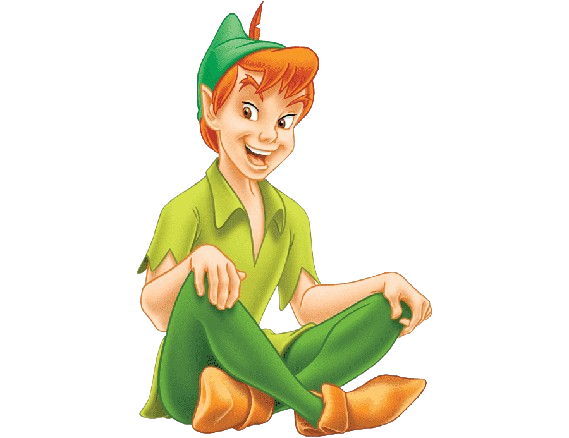

INTRODUCCIÓN
La enseñanza que deja huella no es la que se hace de cabeza a cabeza, sino de corazón a corazón
Howard G.Hendricks
La enseñanza que deja huella no es la que se hace de cabeza a cabeza, sino de corazón a corazón
Howard G.Hendricks
|
MÓDULO 2: REAS. LICENCIAS Y SEGURIDA 2.1 Comenzamos nuestro proyecto¿Cuál será mi proyecto? 2.2 Localizar un ABP, un proyecto, una SdA, REA...y comentarWeb "la clase de Miren" 2.3 Licencia y seguridadElaborar una guía con medidas para protección de datos personales y garantías de derechos digitales |
|
MÓDULO 3: HERRAMIENTAS DE COMUNICACIÓN 3.1. Herramientas de comunicaciónAsesoramiento y apoyo en herramientas de comunicación a un director novel |
|
MÓDULO 4: HERRAMIENTAS PARA LA CREACIÓN Y PUBLICACIÓN DE CONTENIDOS 4.1 Elección de herramientas para el producto finalCrear un hilo y responder a la intervención de un compañer@ en un foro |
|
MÓDULO 5: HERRAMIENTAS PARA LA ORGANIZACIÓN Y GESTIÓN DE LA INFORMACIÓN 5.1 Curacuón de contenidoUso de dos herramientas de curación de contenido |
|
MÓDULO 6: CONCRECIÓN CURRICULAR 6.1 Asociación de tareas a criterios de evaluaciónGuía didáctica de la SdA |
|
MÓDULO 7: ORGANIZACIÓN TEMPORAL, ESPACIAL Y GRUPAL 7.1 Línea temporal para la organizaciónLínea tempora SdA |
8.1 Elección y creación de instrumentos de evaluaciónInstrumentos de evaluación de la SdA |
Producto final: SdASda Las aventuras de Peter Pan |
Obra publicada con Licencia Creative Commons Reconocimiento Compartir igual 4.0